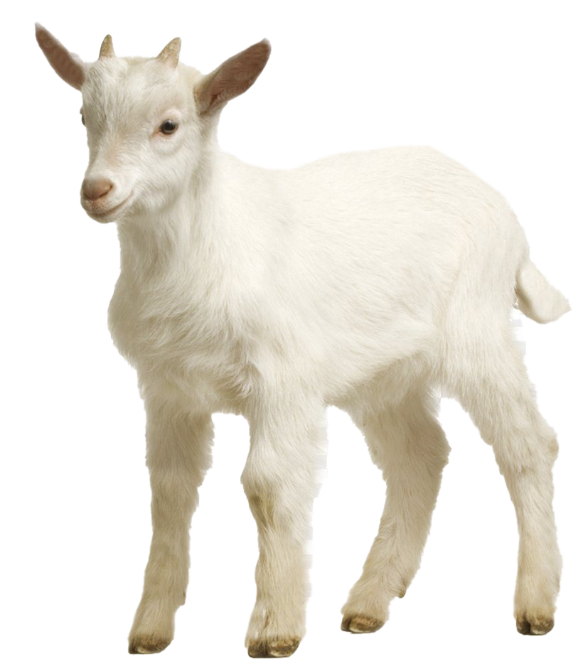
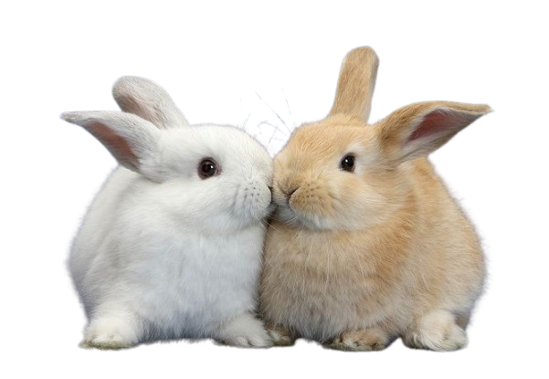
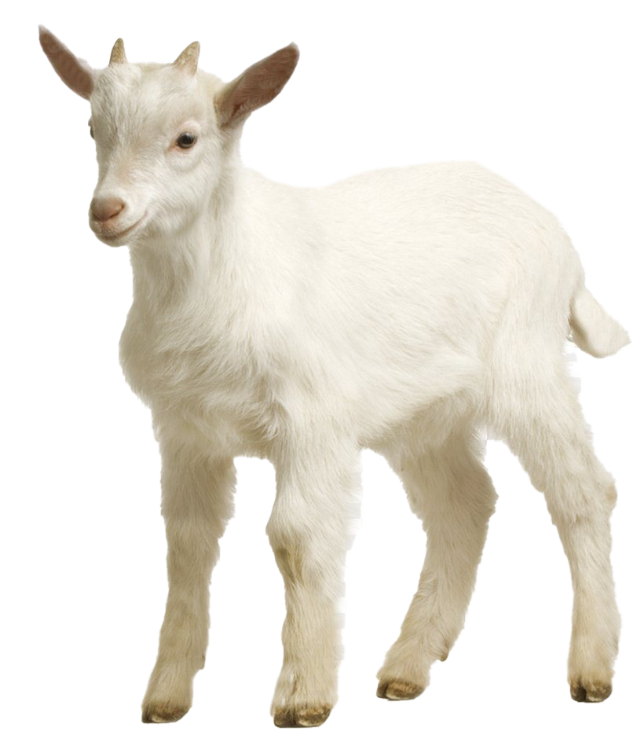
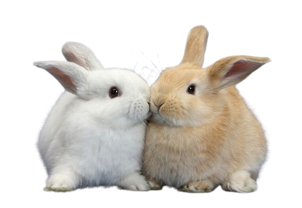

hii baby! im writing this on my laptop so sorry in advance aboyt any mistakes or like...robotic text and terrible punctuation, im kinda just writing what i think and im not sure if i will go back to correct :(( sorry....... i just wanted to tell you (again) how much i appreciate you. you mean everything to me, and i am BEYOND greatful (and lucky) to have met an angel as sweet as you. There is nothing in the world that i love more thank you, i wouldnt give you up for anything :( i love love love love love everything about you and i hope you know that, i love ur pretty voice and our pretty face and everything about you and your persoanlity and your presence makes me so happy - talking to you is my favourite part of my day and i cant wait till we get to do it face to face!!!!!!! I dont think you realise how big of an impact youve had on my life.. i think of you all the time, and the last 6 months have been the best 6 months of my life. you made me realise that not everyone sucks, and if it wasnt for you, im not really sure what i would be doing with my life right now. I love you mathias baby, i am so in love with you and every single thing about you and there is nothing in the world that could change that. I really hope to spend the rest of my life with you, i cant see a future without you in it. hopefully soon ill be able to show you how much i appreciate you in person, you are the sweetest little angel in the world and you deserve to be spoiled and looked after and i feel so bad that thats not something i can fully do while im so far away (angry emoji x3)
i really want to thank you for being here and being the most amazing boyfriend possible, i know things arent always easy for you, but im SO proud of you for trying your best and taking care of yourself and being such a wonderful man to be with. i want you to know how much i care about you and about how you feel,i want you to know that i am always a text or call away and ill always be here whever you need me. youre my baby and i want you to know that for as long as im here there will ALWAYS be someone who adores you and cares for you more than anything. you are my top priority and i would put you above anything and i want you to feel that way, not just take my word for it. everything you do makes me happy, i love seeing you happy and making new friends and eating well and i truly do want whats best for you!! perchance i should start rewarding that more often :)) anyway, i wish you knew how precious you are to me. there isnt a day that goes by where i dont listen to your voice notes, look at pictures of you, watch vids about you, talk to people about you. you are all i think about no matter what im doing, and ive never been so in love or even been half as close to anyone as i am with you. you are perfect in every single way possible and im gonna keep reminding you of it as much as i possibly can because i want you to see yourself the way i see you, and i think youre flawless. i love you and i wouldnt change a thing (aside from the fact you think you have more aura than me, would someone with no aura be able to make those goats and bunnies onthe screen move like that?????? i dont think so.) you are THE BEST boyfriend in the world, pls never change anything and stay goated and tuff ❤︎❤︎❤︎ i looooveeee you, i am so proud of my little bunny and i always will be!! mwah mwah mwah, sorry this isnt too long:((((( i hope you have the sweetest dreams!

 



Do I have aura?